Pada praktikum ini dilakukan pembuatan aplikasi CRUD sederhana menggunakan framework Laravel. Praktikum membahas penggunaan migration, seeding, routing, model, controller, dan view dengan konsep MVC (Model View Controller).
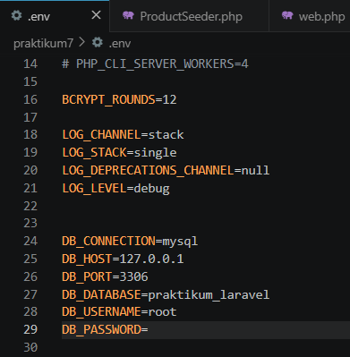
Konfigurasi database dilakukan pada file .env dengan mengatur DB_DATABASE, DB_USERNAME, dan DB_PASSWORD agar Laravel dapat terhubung dengan MySQL.
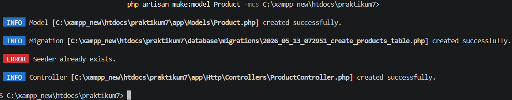
Perintah tersebut digunakan untuk membuat model beserta migration, controller, dan seeder secara otomatis.
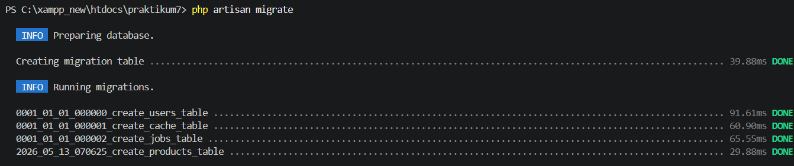
Migration digunakan untuk membuat struktur tabel
php artisan migrate
Perintah migrate digunakan untuk menjalankan migration dan membuat tabel pada database.
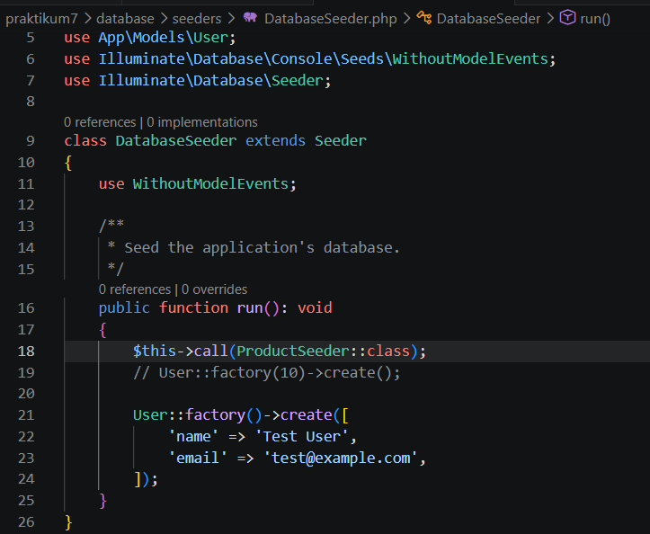
Buat seeder untuk menambahkan data awal product ke dalam tabel products.
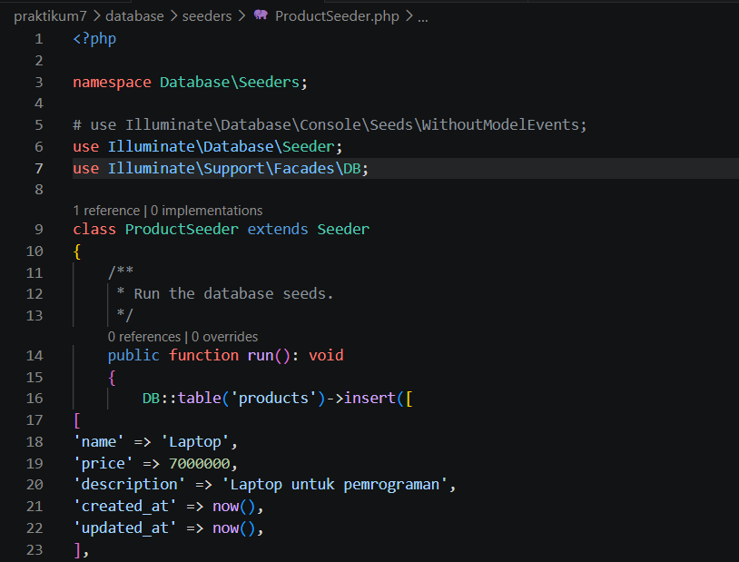
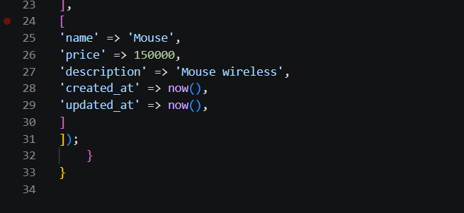
Seeder digunakan untuk menambahkan data awal mahasiswa ke dalam database.
php artisan db:seed
Perintah tersebut digunakan untuk menjalankan seeder dan memasukkan data ke tabel mahasiswa.
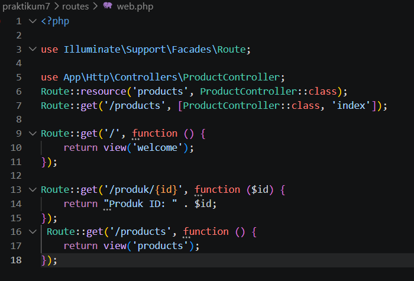
Route dibuat pada file web.php menggunakan Route::resource untuk menghubungkan URL dengan ProductController.
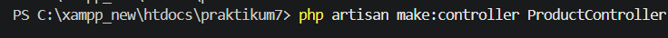
Controller digunakan untuk mengatur logika aplikasi seperti menampilkan data, menambah data, mengubah data, dan menghapus data mahasiswa.
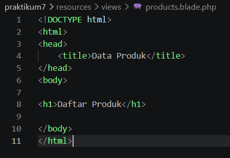
View dibuat menggunakan Blade Template
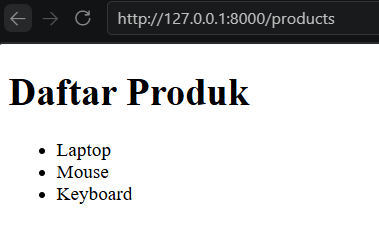
Halaman utama aplikasi menampilkan daftar product yang telah dimasukkan melalui seeder.
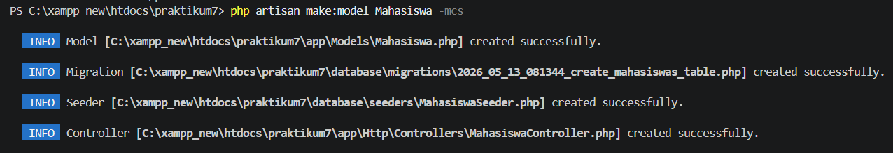
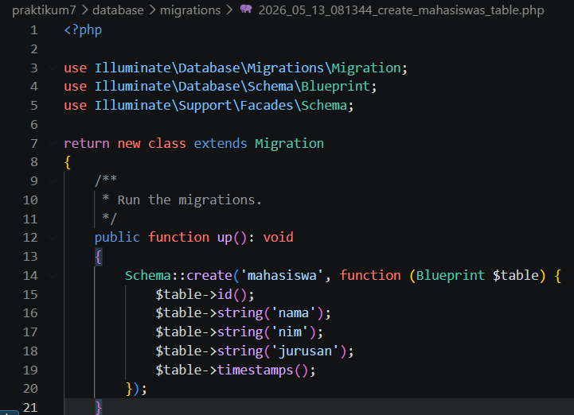
Migration digunakan untuk membuat struktur tabel
php artisan migrate
Perintah migrate digunakan untuk menjalankan migration dan membuat tabel pada database.
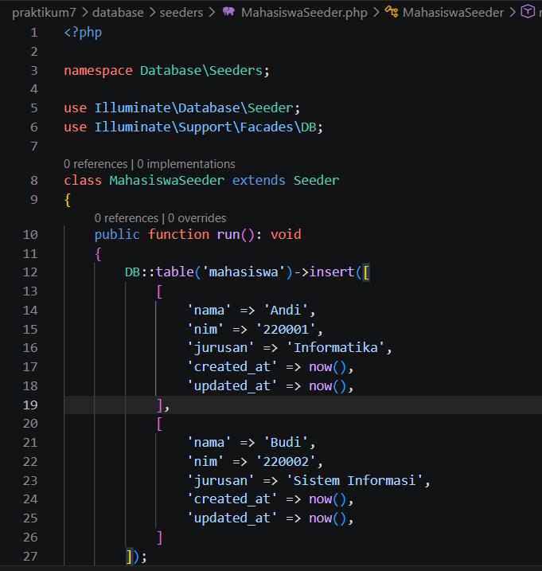
Seeder digunakan untuk menambahkan data awal mahasiswa ke dalam database.
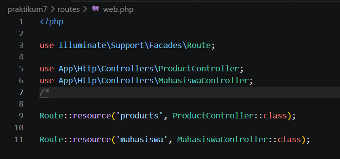
Route dibuat pada file web.php menggunakan Route::resource untuk menghubungkan URL dengan MahasiswaController.
Controller digunakan untuk mengatur logika aplikasi seperti menampilkan data, menambah data, mengubah data, dan menghapus data mahasiswa.
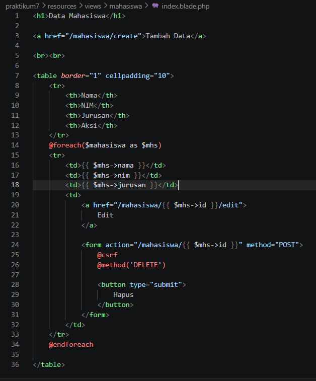
View untuk menampilkan daftar mahasiswa.
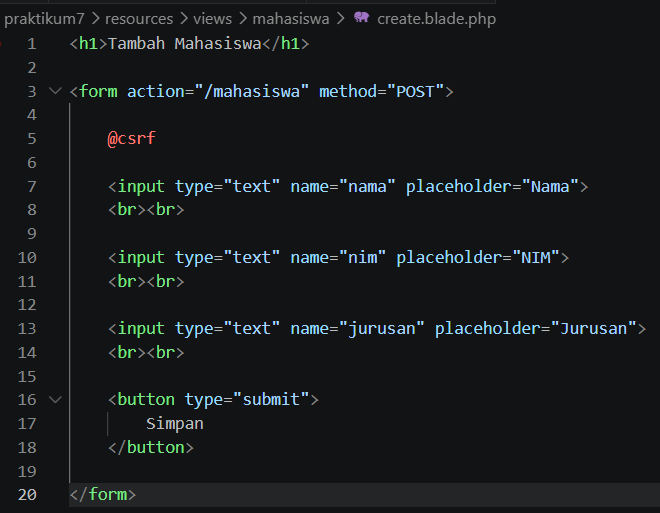
View untuk form tambah mahasiswa.
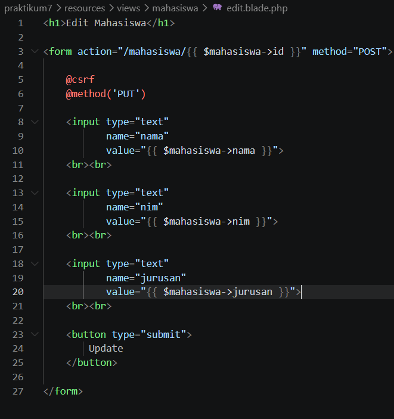
View untuk form edit mahasiswa.
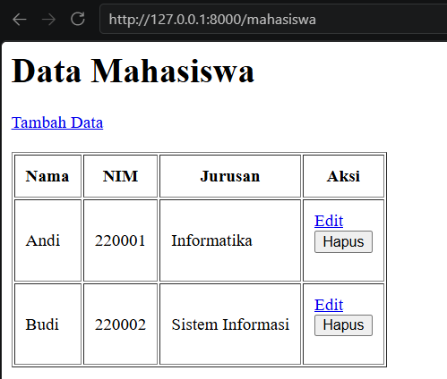
Halaman utama aplikasi menampilkan daftar product yang telah dimasukkan melalui seeder.
Praktikum ini memberikan pemahaman mengenai penggunaan migration, seeding, routing, model, controller, dan view pada Laravel. Dengan mengikuti langkah-langkah praktikum, aplikasi CRUD data mahasiswa berhasil dibuat menggunakan konsep MVC pada framework Laravel.
Lihat Repository GitHub